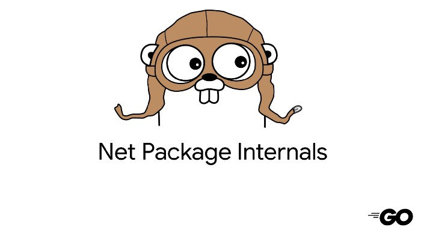
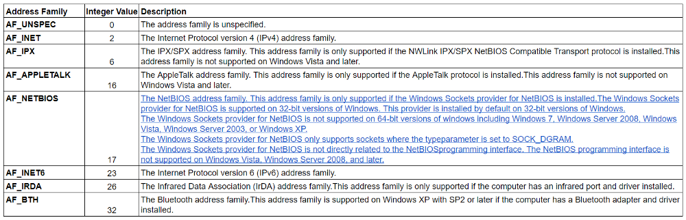

Sockets: The Genesis of Golang Connections — Golang net pkg #1
Welcome to the first in a new series that attempts to breakdown the internals of the Golang net package. The net package is filled with several networking primitives that pair closely with the underlying OS to allow us to build world class production networking applications. Renowned projects like Docker, Kubernetes, CoreDNS, Traefik are architected in Go and are known for their prowess in ability to quickly and efficiently shuffle packets to and from various client server services.
In this article we shall perform a deep dive into the operating system (GOOS) and look at Sockets and how they work, and start to piece together a model to understand connections and networking. For the sake of demonstration, we shall assume we are using a Unix based APIs.
Sockets
Sockets are a pretty old concept first widely introduced in 1983 in the 4.2BSD implementation which then overflowed to pretty much every UNIX and other system. Sockets are fundamentally a method of inter-process communication (IPC) that extend to networked systems. Where other forms of IPC such as pipes and message queues are limited to the machine itself, sockets can be opened and connections from external sources can attach themselves to an available socket. To really understand their role, we look at some of the typical methods used to call the socket API, and observe a connection flow from one host to another.
The Socket API
There are about 5 core methods within the Socket API that applications that want
to network must call. These are socket(), bind(), connect(), listen() and
accept(). In this article we will look at socket() and bind()
1. Socket
According to the Linux man pages,
The socket() call creates an endpoint for communication and returns a file descriptor that refers to that endpoint.
The creation of a socket is mostly performed by the kernel, so Go applications must call this through the use of a syscall implemented in the syscall library. Let’s examine the Go code where this syscall happens.
/**
* Code Snippet 1: Implementations of Socket syscall:
Note the signatures shown for Unix and Windows are similar
despite being on different GOOS.
*/
// Unix implementation of socket() system call
int socket(int domain, int type, int protocol);
// Windows implementation of socket() system call
SOCKET WSAAPI socket(int af, int type, int protocol);
Let’s take a look at each of the arguments.
domain: The domain refers to the protocol family to be used in the
communication. this is sometimes referred to as the address family. Examples of
domains are:
 Table 1: A list of Address Families supported by Windows. See more here
Unix kernels also have AF_UNIX that performs communication within the kernel
on the same machine (not used for external networking).
type: The type represents the type of underlying transport to use. Represented
as either SOCK_STREAM for reliable, sequenced, connection oriented messages
(think TCP) as well as SOCK_DGRAM for connection-less, unreliable messages
(think UDP or UNIX connections).
protocol: Protocol refers to a single protocol that supports the selected
socket. These are usually in a given protocol family and often this value is
defaulted to 0.
2. Bind
The next Important syscall is to the bind() method. After a socket is created using the socket syscall() the socket exists without any address attached to it. bind() locates the socket through the use of the file descriptor returned from the socket creation, and attaches a network address to it.
/**
* Code Snippet 2: Implementations of bind() syscall: Note the similar function signatures.
*/
// Unix implementation of bind() system call
int bind(int sockfd, const struct sockaddr *addr, socklen_t addrlen);
// Windows implementation of bind() system call
int WSAAPI bind(
SOCKET s,
const sockaddr *name,
int namelen
);
Bind takes in the following arguments:
sockfd: This represents the file descriptor of the socket returned after creation. Remember in the socket method, the return type is a file descriptor. In order to bind the socket we created, we use the file descriptor as the first argument to the bind method.
socketaddr: Is a pointer to a struct that contains the address that the socket we created can be bound. The address must be “well-known” i.e fixed and resolved before binding. The address should not change after binding, otherwise a new socket will need to be created. DNS resolution should happen first, and we will look at this in an upcoming article.
socklen: Refers to the size of the address struct
Bind is important as it provides a well-known path to and from the socket. It
also enables to kernel to broadcasts the whereabouts of the socket so external
systems can know where to connect. It is possible to omit a call to bind after
creating a socket, in which case the kernel will select a random available port
on localhost and bind to it. You may have noticed this when using
httptest.NewServer() method that does not give the option of specifying an
address, and lets the kernel handle it. Similarly when using a debugger in an
IDE e.g. Goland, when the debugger is run, the kernel chooses a port for the
debugger by either omitting a call to bind therefore returning a different port
each time. Once the debugger is stopped, the socket is destroyed.
Go’s Implementation of Socket and Bind
It’s time to shift our focus back to Go. We have seen the purpose of the socket() and bind calls(), but the question remains, where and how are they implemented.
/**
* Code Snippet 2: Implementations of bind() syscall: Note the similar function signatures.
*/
// This unimplemnted function is found in the syscall/syscall_linx_386.go file and is referenced by the socket function below.
// It is implemented in the syscall/asm_linux_s390x.s file
func rawsocketcall(call int, a0, a1, a2, a3, a4, a5 uintptr) (n int, err Errno)
// The bind method mirrors the Unix API for bind calls. A call to rawsocketcall is made (see methods above)
func bind(s int, addr unsafe.Pointer, addrlen _Socklen) (err error) {
_, e := socketcall(_BIND, uintptr(s), uintptr(addr), uintptr(addrlen), 0, 0, 0)
if e != 0 {
err = e
}
return
}
// The socket method mirrors the Unix API for Socket calls. A call to rawsocketcall is made (see method above and below)
func socket(domain int, typ int, proto int) (fd int, err error) {
fd, e := rawsocketcall(_SOCKET, uintptr(domain), uintptr(typ), uintptr(proto), 0, 0, 0)
if e != 0 {
err = e
}
return
}
// func rawsocketcall(call int, a0, a1, a2, a3, a4, a5 uintptr) (n int, err int)
// Kernel interface gets call sub-number and pointer to a0.
// This method is found in the syscall/asm_linux_s390x.s file
TEXT ·rawsocketcall(SB),NOSPLIT,$0-72
MOVD $SYS_SOCKETCALL, R1 // syscall entry
MOVD call+0(FP), R2 // socket call number
MOVD $a0+8(FP), R3 // pointer to call arguments
MOVD $0, R4
MOVD $0, R5
MOVD $0, R6
MOVD $0, R7
SYSCALL
MOVD $0xfffffffffffff001, R8
CMPUBLT R2, R8, oksock1
MOVD $-1, n+56(FP)
NEG R2, R2
MOVD R2, err+64(FP)
RET
oksock1:
MOVD R2, n+56(FP)
MOVD $0, err+64(FP)
RET
The golang-socket-syscall.go file in Code Snippet 3 above showcases the socket()
method with a signature similar to that of the UNIX socket() API. What is even
more interesting is that the call to the rawsocketcall() in the socket() refers
to a function stub that is actually implemented in Assembly. I wrote an article
detailing the importance of Assembly in Go. The Assembly code appears to perform
the underlying syscall and passing in relevant arguments received from the Go
application, to the kernel.
The implementation of bind() is very similar. It also conforms to the bind() in
the Unix interface. It also makes a call to rawsocketcall with a _BIND
parameter. This is just an integer constant that refers to the integer 2, where
_SOCKET refers to 1. Other syscalls have their own unique constant integer
identifier.
A Quick Note on File Descriptors
The socket() syscall we saw in Code Snippet 1 returns an integer, this integer
will be extremely important and will lay the foundation for several of the
following articles. The term File Descriptor should be memorized and not
forgotten as it will popup quite a bit when we begin creating, reading and
writing to connections. One thing you can ponder on for now, is why its called a
“File” descriptor. I answer this in the a future article.
For now, I think this is a good place to stop as we now have an understanding of sockets and some of the core syscalls that must be performed to create and bind addresses to them. In the next article we look at how socket connections work between client-server services.